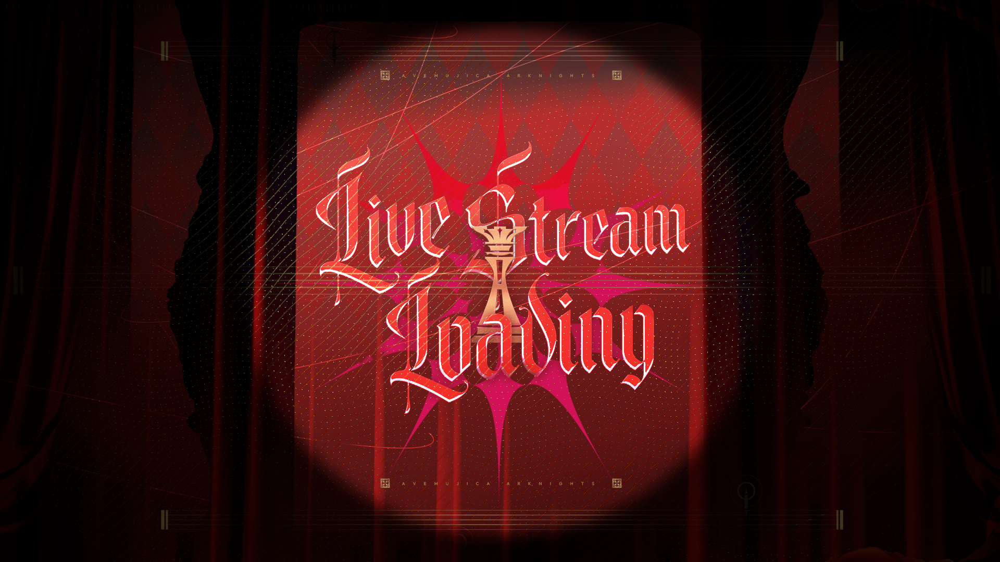

<div class="site-wrapper">
    <div class="background-layer" style="background-image: url('img/avemujica直播间.png');"></div>
    
    <div class="overlay-decor"></div>

    <main class="glass-card">
        <aside class="sidebar">
            <div class="avatar-container">
                
            </div>
            <nav class="menu">
                <a href="#home" class="active">舞台</a>
                <a href="#members">角色</a>
                <a href="#about">关于</a>
            </nav>
        </aside>

        <section class="content">
            <div class="content-item active" id="home">
                <h1>Ave Mujica</h1>
                <p>若要步入这边的世界，就请舍弃一切。</p>
                <div class="chat-preview">...</div>
            </div>
        </section>
    </main>
</div>
